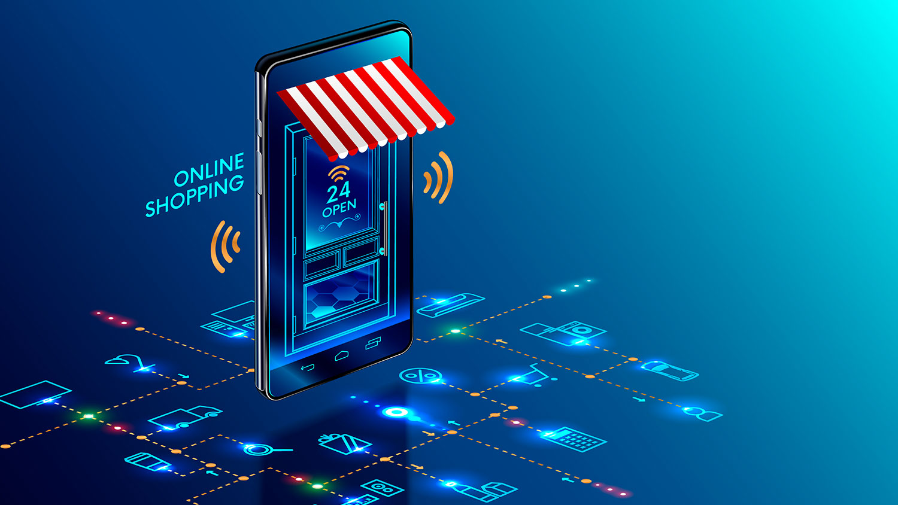
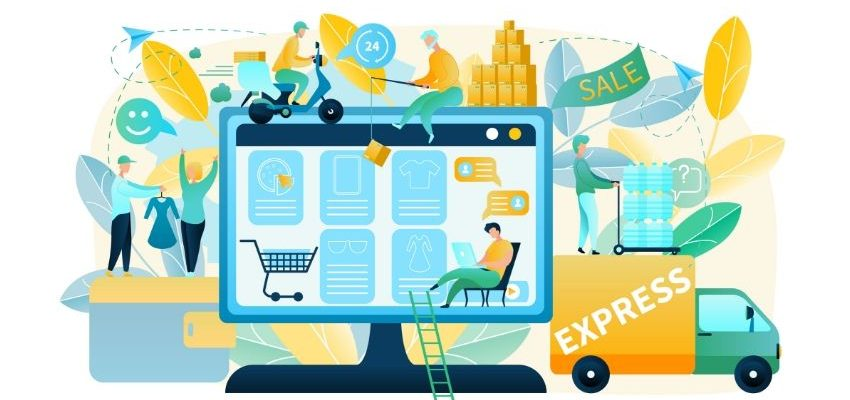

Tecnologías de construcción de servicios WEB
Identificara los conceptos aplicados a las tecnologías de construcción de servicios WEB.
El mundo digital ha transformado la manera en que las empresas operan y se relacionan con sus clientes. El e-business, o negocio electrónico, se refiere a todas las actividades comerciales que se realizan a través de medios electrónicos, como internet. Dentro de esta categoría, el e-procurement se destaca por ser el proceso de adquisición de bienes y servicios a través de plataformas digitales, lo que agiliza y simplifica el proceso de compra para las empresas.
Estos temas representan la evolución y el impacto significativo que la tecnología ha tenido en el mundo empresarial actual.

¿Qué es el E-business?
E-business significa negocio electrónico y es la realización de transacciones de forma digital, a través de diferentes soluciones tecnológicas. Este término clasifica a las empresas que surgieron íntegramente digitales y también a las que migraron al medio digital.
El e-business ha cambiado la forma en que las empresas hacen negocios. En los últimos años, la digitalización de procesos y la adopción de modelos de venta cada vez más modernos han provocado transformaciones reales en las relaciones comerciales.
En la actualidad, existe una gran oportunidad de fortalecimiento para las empresas con este modelo debido a la facilidad de acceso a la información, la posibilidad de realizar procesos administrativos por medio de múltiples plataformas y la comunicación efectiva a través de distintos canales con otros miembros de la cadena de suministro.
El término ayuda a clasificar a las empresas que operan de manera totalmente digitalizada o incluso a aquellas que operaron físicamente y luego comenzaron a operar electrónicamente, con una estructura fuertemente basada en la tecnología. Hoy en día, las transacciones de comercio electrónico se realizan a través de Internet y facilitan la vida a clientes y empresarios.
¿Qué es el e-Procurement?
Aprovisionamiento electrónico, hace referencia a la contratación electrónica y a la automatización de los procesos que implican las operaciones de compra de productos o servicios entre cliente y proveedor (pedido, recepción, suministro, facturación, etc.). El e-Procurement puede aplicarse tanto a las relaciones en el sector privado (B2B) como entre el sector público y empresas (B2G). Sin embargo, su uso más extendido es el que hace referencia a las comunicaciones electrónicas y procesos transaccionales para las administraciones públicas.
Gracias al e-Procurement se desmaterializan las transacciones comerciales entre cliente y proveedores. Los beneficios del sistema son numerosos para ambas partes por lo que muchos gobiernos han comenzado a establecer estrategias de e-Procurement.
La automatización de las gestiones y la eliminación del papel a lo largo de toda la cadena de suministro es lo que caracteriza al sistema. A través del intercambio electrónico de datos se establecen los mecanismos.
La aplicación de una contratación electrónica proporciona importantes beneficios tanto para el cliente como para el proveedor. En ambos casos el ahorro de costes es una de las principales ventajas que impulsan a la reconversión de los procesos de contratación y a implementar soluciones que hagan posible el e-Procurement. Además, en el caso de la administración pública, otro beneficio clave es la transparencia.
¿Qué es el eShops?
Comercio electrónico, es un sitio web transaccional que cumple con los requisitos necesarios para quecualquier empresa pueda comercializar y difundir sus productos y servicios.Es más que una página donde se exponen artículos, es una plataforma de negocios queincorpora clientes y entrega las herramientas necesarias para que una empresa crezca enposicionamiento.
Es un sitio web transaccional que cumple con los requisitos necesarios para que cualquier empresa pueda comercializar y difundir sus productos y servicios.
Comúnmente utilizada para referirse a "tiendas en línea" o "tiendas virtuales", es decir, sitios web donde los usuarios pueden comprar productos o servicios a través de Internet. Estas tiendas suelen ofrecer una amplia gama de productos que van desde ropa y electrónica hasta alimentos y artículos para el hogar, entre otros. Los eShops suelen ofrecer diversas formas de pago, como tarjetas de crédito, PayPal, transferencias bancarias, entre otros, y suelen incluir funciones de carrito de compras y opciones de envío.
